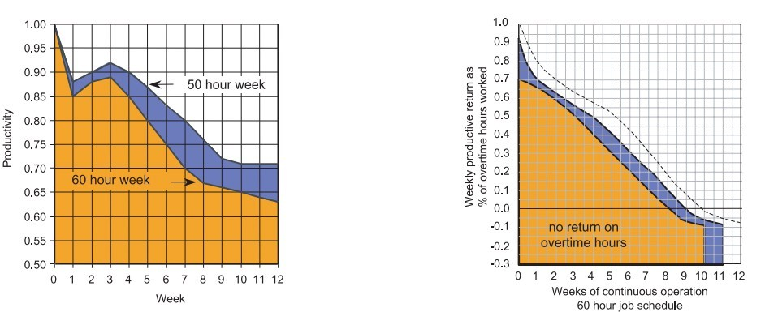
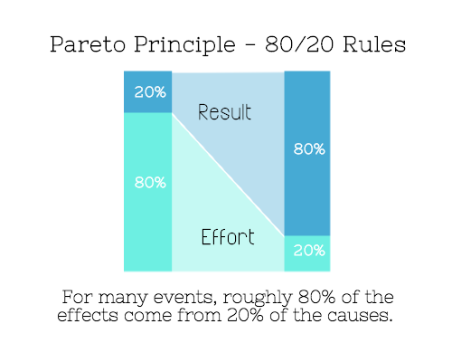
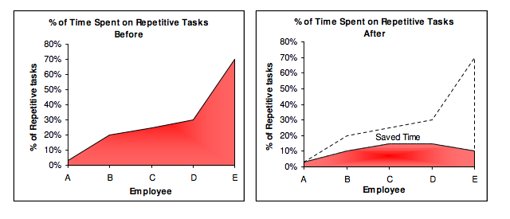

忙しいからといって生産性が高いとは限りません。生産性を高めるには、時間ではなくエネルギーを管理することが重要です。自分の生活をうまく経営しましょう。最小のエネルギーで最大の利益を得ることを学ぶ必要があります。以下の7つのことをやめたことで、私は週の労働時間を80時間から40時間に短縮しましたが、完了した仕事は大幅に増えました。
1、残業をしないほうが効率が高い

週5日・1日8時間の労働制は、1926年にフォードが発見しました。実験によると、1日の労働時間を10時間から8時間に減らし、週の労働日数を6日から5日に減らしたところ、生産性はむしろ向上しました。1980年にビジネス・ラウンドテーブルが発表した「建設プロジェクトにおける残業の影響」によると、短期的にも長期的にも、働きすぎると効率と生産性は低下します：
週の労働時間が60時間を超える状態が2か月以上続くと、生産性低下の累積効果により完成日が遅れます。同じ人数が週40時間だけ働いた場合のほうが、むしろ早く完成します。
米軍の研究によると、「毎日1時間の睡眠不足が1週間続くと、血中アルコール濃度0.1に相当する認知機能の低下を引き起こす」とされています。
「睡眠の秘密の世界」は次のように指摘しています：
徹夜の後は、日中どれだけうまく仕事ができても、気分はあまり高まりません。さらに重要なことに、先を見越した思考と行動への意欲、衝動の抑制、楽観度、共感力、心の知能指数なども低下します。
したがって、十分な睡眠を確保することは、高いレベルの生産性を維持するために非常に重要です。
多くの有名人は昼寝をよくしていました。ダ・ヴィンチ、ナポレオン、エジソン、ルーズベルト夫人、ジーン・オートリー、ケネディ、ロックフェラー、チャーチル、リンドン・ジョンソン、レーガンなどは皆、昼寝の習慣がありました。
2、いつも「はい」と言わない

20/80の原理（パレートの法則）によれば、20%の努力が80%の結果を生み出します。しかし逆に、20%の結果のために80%の努力が消費されます。したがって、80%の結果を生み出すことにエネルギーを集中し、それ以外のことは捨てるべきです。そうすれば、最も重要なタスクにより多くの時間を集中できます。生産性が低い、または結果の出ないタスクに「イエス」と言うのをやめるべきです。成功者と非常に成功した人々の違いは、後者がほとんどすべてのことに対して「ノー」と言うことです
——ウォーレン・バフェット
ここで疑問が生じます：どのようなことに「イエス」と言い、どのようなことに「ノー」と言うべきなのでしょうか？時間をかける価値のあることが思い浮かばない場合は、簡単な分離テストを試してみましょう。自分が行うすべてのことを追跡し、可能な限り最適化します。
私たちのほとんどは「イエス」と言いすぎる傾向があります。なぜなら、断るよりもはるかに簡単だからです。誰も悪者になりたくないのです。
2012年に消費者雑誌が発表した研究で、研究者は120人を2つのグループに分けました。一方のグループは「I can't（私はできない）」と言うように訓練し、もう一方は「I don't（私はしない）」と言うように訓練しました。結果は非常に興味深いものでした：
自分に「Xは食べられない」と言った学生は61%の確率でチョコレートを選びましたが、「Xは食べない」と言った学生はわずか36%の確率で誘惑に負けました。言い方をこれほど単純に変えるだけで、健康的な食品の選択が大幅に改善されるのです。
したがって、次回「イエス」と言うのを避けたいときは、はっきりと「私はしない」と言いましょう。
不要な活動を避けるもう一つのテクニックは20秒ルールです：やるべきでないことに対しては、自分に20秒余分に考える時間を与えます。
3、すべてを自分でやらない
私はかつて非常に大きなコミュニティを管理していましたが、すべてを一人でやろうとして、結局できないことに気づきました。私は疲れ果て、最終的にコミュニティが自主管理を引き継ぎました。驚くべきことに、皆は私よりも上手くやったのです。これにより、私はコミュニティの力を悟りました。
必要なときに助けを求めてよいことを認識することが重要です。あなたより上手くできる人に仕事の一部を引き継いでもらうほうが、あなたにとって良いのです。そうすれば、最も重要なタスクにより多くの時間を費やすことができます。自分で問題を解決するのに時間を無駄にせず、専門家の助けを借りましょう。
多くの場合、友人が直接助けてくれなくても、そばにいてくれるだけで生産性が高まります。
4、完璧主義にならない
ダルハウジー大学の心理学教授サイモン・シェリーによる完璧主義と生産性に関する研究では、完璧主義は生産性の妨げになることがわかりました：
完璧主義者はタスクを完了するのにより多くの時間を要する 完璧主義者は完璧なタイミングを待つために遅延する。ビジネスにおいては、完璧なタイミングを待っていたら手遅れになる。 完璧主義は木を見て森を見ず、小さなことに気を取られて全体像を見失いがちである。
完璧なタイミングの最良のものは、今です。
5、繰り返しの作業をしない

Tethys Solutionの研究によると、5人チームが繰り返しの作業に費やす時間がそれぞれ3%、20%、25%、30%、70%だった場合、2か月間の生産性強化（自動化ソフトウェアの導入）後、それぞれ3%、10%、15%、15%、10%に低下しました。現在では、何かを5回以上繰り返す必要がある場合、必ず自分用のプログラムを見つけるようにしています。プログラミングができなくても問題ありません。開発が分からなければ、プログラムを購入すればいいのです。
人々は時間がお金であることを忘れがちです。手作業で行う理由は通常、調査が不要で簡単だからです。30枚の画像を処理するのは問題ないように思えますが、30,000枚だったらどうでしょうか？ソフトウェアで処理するしかありません。覚えておいてください、お金を稼ぐにはお金を使う必要があり、時間は最も価値ある商品です。
6、推測で意思決定しない
ウェブサイトにSEOができるなら、人生にもできるはずです。当てずっぽうで決断するのではなく、データで意思決定を裏付けましょう。
さまざまな分野に参考になる研究が数多くあります。例えば、午後4時に人が最も注意散漫になりやすいことをご存知ですか？これはペンシルベニア大学の助教授ロバート・マッチョックが率いた研究です。必要なデータが見つからなくても、分離テストにはそれほど時間はかかりません。
自分が行うすべてのことをどのように測定し、最適化するつもりなのか、絶えず自問しましょう。
7、働きっぱなしにしない
ほとんどの人は気づいていませんが、何かに集中しすぎると、箱の中に閉じこもってしまい、枠の外に出ることができなくなります。時々仕事から離れて一人の時間を持つことが非常に重要です。「孤独の力」によると、一人で過ごす時間は脳と精神に非常に有益です：
ハーバード大学の研究によると、ある体験を独りでしていると信じている場合、その記憶はより長く正確に保たれます。別の研究では、一定時間の独り時間は共感力を高めることができると示されています。幼少期の過度な孤独が不健康であることを疑う人はいませんが、一定時間の独り時間は青少年の気分を改善し、成績を向上させることができます。
内省の時間を確保することが重要です。解決策を探していないときに、解決策が思いがけず訪れることがよくあります。
もちろん、一晩で生産性を高めることはできません。人生のあらゆることと同様に、これにも努力が必要です。棚からぼた餅を待っていても変化は訪れません。私たちは皆、自分の体をもっと理解し、エネルギー配分の最適な方法を見つける必要があります。そうすれば、より成功し幸福な人生を送ることができるのです。
[本記事は36Kr以下の記事を翻訳・編集したものです：medium.com]
クリックしてノートを共有
<p style="font-size:14px;">ノートは本記事の内容を拡張したものである必要があります！</p><br> <p style="font-size:12px;"><a href="../tougao.html" target="_blank">記事の投稿は、こちらをクリックしてください</a></p> <p style="font-size:14px;"><a href="./runoob-user-test-intro.html" target="_blank">登録招待コードの取得方法</a></p> <h3 class="text-muted"><i class="fa fa-info-circle" aria-hidden="true"></i> ノートを共有する前に<a href=".." class="runoob-pop">ログイン</a>が必要です！</h3> <p><a href="./runoob-user-test-intro.html" target="_blank">登録招待コードの取得方法</a></p>